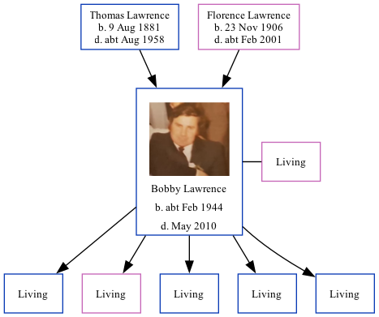

Bobby Andrew James Lawrence cFeb 1944 - 2010
[ Home ] | [ Calendar ] | [ Surnames Index ] | [ Family History ]The child of Thomas Lawrence (a builder) and Florence Lawrence, Bobby Lawrence, the first cousin once-removed on the mother's side of Nigel Horne, was born in Thanet, Kent, England c. Feb 19441. He married Glynis Newing (with whom he had 5 surviving children Jason, Bethanie Mercie, Isaac, Bruce and Alexander) in Thanet around Nov 19722.
He died in May 2010.
Parents
- Thomas William was born on Aug 9, 1881
- Florence Eva was born on Nov 23, 1906
Citations
- England & Wales births 1837-2006 - Findmypast
- England & Wales Marriages 1837-2005 - Findmypast
Media
Bobby Lawrence
England & Wales marriages 1837-2005 - BMD/M/1972/4/AO/000928/105
England & Wales births 1837-2006 - BMD/B/1944/1/AZ/000797/155
Family Tree
Generated by Ged2Site. Last updated on Jul 20, 2025